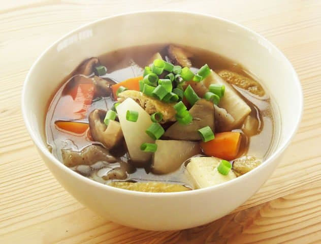

Home

Kenchinjiru (Sup Sayur Jepang)
Bahan
- 1/2 Lobak putih iris tipis
- 1 Wortel iris
- 50 gr jamur shimeji / jamur tiram
- 1/2 Tahu sutra
- 600 ml air
- Bumbu : 1 sdm kecap asin, 1/2 sdt dashi bubuk (ganti kaldu bubuk)
Cara
- Didihkan air, masukkan wortel dan lobak.
- Tambahkan jamur dan tahu.
- Beri bumbu, masak 10 menit.